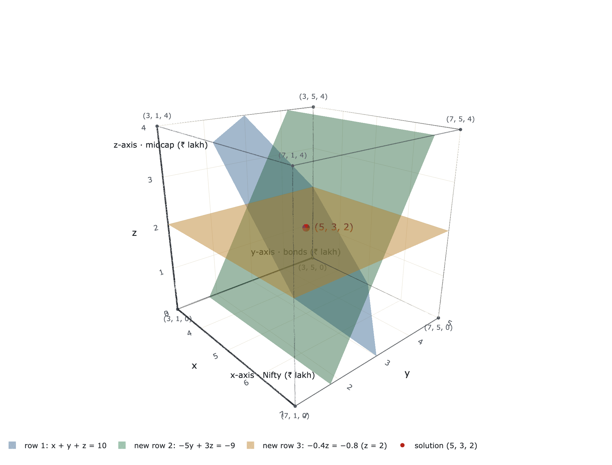

How every computer solves $Ax = b$: eliminate down to a triangle, then back-substitute.
Shown on a real money question: splitting ₹10 lakh across funds.
In Lesson 1 we solved a portfolio by drawing lines and spotting tricks. With 50 funds and 50 rules, nobody can draw or guess.
The same three-fund system, now solved properly:
$$ \begin{bmatrix} 1 & 1 & 1 \\ 12 & 7 & 15 \\ 1 & 0 & 1.2 \end{bmatrix}\begin{bmatrix} x \\ y \\ z \end{bmatrix} = \begin{bmatrix} 10 \\ 111 \\ 7.4 \end{bmatrix} \;\; \begin{matrix} \text{budget} \\ \text{return} \\ \text{exposure} \end{matrix} $$Elimination: the way every software package solves equations.
Solve the last equation, then work upwards. Elimination turns any good system into a triangle like this, without changing its solution.
Pivot: the diagonal entry used to clear the entries below it.
Multiplier: entry to clear ÷ pivot.
Multiplier $12 / 1 = 12$. Subtract 12 × the budget rule from the return rule: $-5y = -15$.
So $y = 3$, then $x = 7$: ₹7 lakh Nifty, ₹3 lakh bonds.
Elimination swaps the return line for $y = 3$. The crossing point $(7, 3)$ doesn't move.
$\ell_{32} = (-1)/(-5) = 0.2$: row 3 − 0.2 × row 2.
$$ [U \mid c] = \left[\begin{array}{ccc|c} \boxed{1} & 1 & 1 & 10 \\ 0 & \boxed{-5} & 3 & -9 \\ 0 & 0 & \boxed{-0.4} & -0.8 \end{array}\right] $$$A$ became upper triangular $U$; $b$ became $c$. Same solution. Pivots $1, -5, -0.4$ on the diagonal.
₹5 lakh Nifty, ₹3 lakh bonds, ₹2 lakh midcap.
Forward elimination, then back substitution. That's all a computer does, with millions of rows.

New planes, ending with the flat $z = 2$. They still meet at the same point $(5, 3, 2)$.
Temporary: a non-zero entry below it? Exchange rows and carry on. (A credit fund earning 12% like Nifty causes this.)
Permanent: nothing non-zero below? No pivot: the matrix is singular. (A 50/50 balanced fund: the last row becomes $0 = -0.8$.)
$n \times n$ matrix: $n$ pivots ⇔ invertible. Fewer: no solution or infinitely many.
Row × matrix combines rows: $\begin{bmatrix} -12 & 1 & 0 \end{bmatrix} A = -12\,(\text{row }1) + (\text{row }2)$.
$$ E_{21} = \begin{bmatrix} 1 & 0 & 0 \\ -12 & 1 & 0 \\ 0 & 0 & 1 \end{bmatrix} \qquad E_{32}E_{31}E_{21}A = U $$Parentheses can move (associative), so $E = E_{32}E_{31}E_{21}$ does all of elimination at once.
$AB \ne BA$ in general.
Permutation $P$: the identity with rows swapped. $PA$ swaps rows of $A$; $AP$ swaps columns.
$$ E_{21}^{-1} = \begin{bmatrix} 1 & 0 & 0 \\ 12 & 1 & 0 \\ 0 & 0 & 1 \end{bmatrix} \quad \text{adds back what } E_{21} \text{ subtracted} $$Every step can be undone, so $Ax = b$ and $Ux = c$ have exactly the same solutions.
A lab that runs elimination step by step on your own numbers, 3D plots and worked examples:
learn.krisarj.com
Based on MIT OpenCourseWare 18.06 Linear Algebra (Prof. Gilbert Strang), used under CC BY-NC-SA 4.0; these slides are shared under the same licence. Not affiliated with or endorsed by MIT. Educational only, not investment advice.